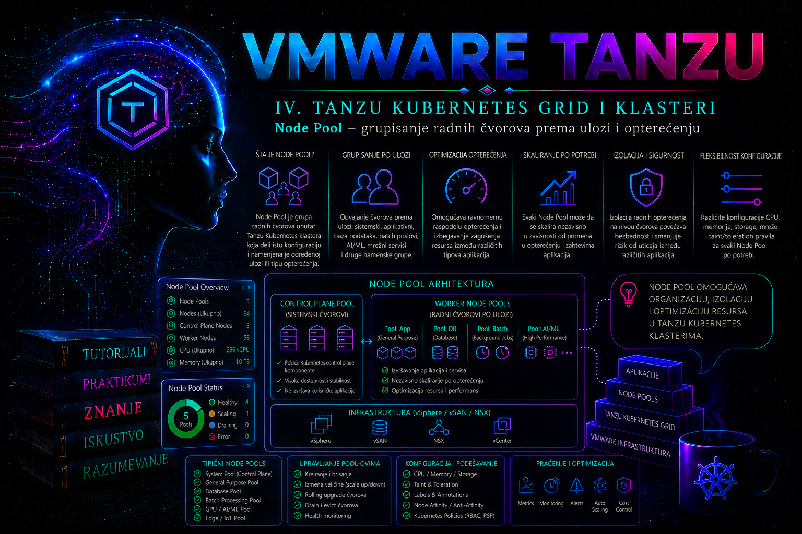

VMware & Tanzu

VKS klaster može da izvršava aplikacije na jednoj homogenoj grupi worker čvorova, ali takav model brzo postaje ograničavajući kada workload-i imaju različite zahteve za procesorom, memorijom, skladištem, dostupnošću, operativnim sistemom ili specijalizovanim uređajima. Analitički servis može zahtevati memorijski bogate virtuelne mašine, aplikacioni API čvorove opšte namene, a platformske komponente rezervisan kapacitet koji korisnički Pod-ovi ne mogu nekontrolisano da zauzmu. U vSphere Kubernetes Service-u (VKS) takve grupe worker mašina predstavljaju se kao node pool-ovi, odnosno Cluster API MachineDeployment topologije kojima Supervisor upravlja deklarativno.
Node pool nije Kubernetes namespace, Deployment niti samostalna bezbednosna granica. On je infrastrukturna grupa mašina unutar istog klastera. Supervisor i Cluster API kontroleri usklađuju željeni broj i konfiguraciju VM-ova, dok Kubernetes scheduler, na osnovu labela, taint-ova, toleration pravila, affinity-ja, zahteva za resursima i topoloških ograničenja, odlučuje gde Pod može da radi. Uspešan dizajn zato povezuje dva različita nivoa: lifecycle mašina i scheduling aplikacija.
Node pool u VKS i Cluster API arhitekturi
U aktuelnom ClusterClass zasnovanom VKS modelu izvor istine je Cluster objekat u Supervisor Namespace-u. Worker grupa se definiše u spec.topology.workers.machineDeployments. Svaka stavka ima stabilno topološko ime name, referencu class na worker klasu koju izlaže ClusterClass, željeni broj replicas i, kada konkretna ClusterClass to podržava, varijable, failure domain, labele i druge dozvoljene izmene. Topology kontroler iz te deklaracije generiše i održava MachineDeployment, a on preko MachineSet i Machine objekata upravlja pojedinačnim VM-ovima.
- VKS Cluster obuhvata control plane, worker grupe, Kubernetes API, mrežu i klasterske servise.
- MachineDeployment topologija predstavlja node pool i željeni lifecycle homogenog skupa worker mašina.
- Machine je infrastrukturna deklaracija jedne mašine; njen odgovarajući Node je izvršni objekat registrovan u workload klasteru.
- Pod je aplikaciona jedinica koju scheduler smešta na Node koji zadovoljava sve hard i soft uslove.
Terminologija zavisi od izdanja. Noviji VKS koristi upstream Cluster API Cluster i ClusterClass model. Stariji vSphere with Tanzu/TKG Service klasteri mogu koristiti sada zastareli TanzuKubernetesCluster (tkc) API i putanju spec.topology.workers drugačijeg oblika. Standalone Tanzu Kubernetes Grid koristi management klaster i Tanzu CLI postupke kao što je tanzu cluster node-pool; ti primeri nisu neposredno primenljivi na VKS kojim upravlja Supervisor. Administrator prvo utvrđuje stvarni API i verziju, a tek zatim bira proceduru.
# Read-only; izvršava se u Supervisor kontekstu i ciljnom namespace-u.
kubectl api-resources | grep -E '(^|[[:space:]])(clusters|tanzukubernetesclusters)[[:space:]]'
kubectl get cluster,tanzukubernetescluster -n <VKS_NAMESPACE>
Ako postoji Cluster resurs za ciljni klaster, koristi se Cluster API procedura ove lekcije. Ako postoji samo TanzuKubernetesCluster, koristi se dokumentacija tačno za instaliranu vSphere verziju; manifest iz jednog modela ne prepisuje se u drugi. Nazivi worker klasa, promenljivih i dozvoljenih patch-eva nisu univerzalni: određuje ih ClusterClass koju platforma objavljuje.
Zašto se worker čvorovi grupišu
Više pool-ova služi kontroli kapaciteta, troška, rizika i predvidivosti schedulera, a ne estetskom uređivanju inventara. Jedan pool sa veoma velikim čvorovima pojednostavljuje upravljanje, ali povećava blast radius kvara i može rasipati skupe resurse. Mnogo specijalizovanih pool-ova preciznije prati potrebe aplikacija, ali povećava broj konfiguracija, monitoring signala i mogućnost da stroga scheduling pravila ostave Pod bez odgovarajućeg čvora.
| Razlog | Primer pool-a | Posledica i kontrola |
|---|---|---|
| Različit odnos CPU-a i memorije | md-memory | Prava VM klasa smanjuje rasipanje; requests i allocatable potvrđuju stvarni kapacitet. |
| Specijalizovan hardver | md-gpu | Labela privlači odgovarajući workload, a taint štiti oskudan uređaj od drugih Pod-ova. |
| Failure domain | pool-ovi po zonama | Infrastrukturni placement i aplikacioni topology spread zajedno smanjuju zajednički kvar. |
| Operativno rezervisan kapacitet | md-platform | Ingress, observability ili drugi servisi zadržavaju kapacitet uz odgovarajući taint, priority i PDB. |
| Različit OS | md-windows | Windows workload koristi kompatibilan image i OS-specifična scheduling pravila; podrška je verzijski uslovljena. |
| Promenljiv batch kapacitet | md-batch | Pool se skalira nezavisno, uz poznato vreme provisioning-a i kontrolu scale-in prekida. |
Node pool nije dobro rešenje kada su potrebni zaseban control plane, nezavisan upgrade prozor, klasterski odvojene mrežne i admission politike, zaseban blast radius ili stroga administrativna separacija. U tim slučajevima zaseban VKS klaster predstavlja jasniju granicu. Svi pool-ovi u jednom klasteru dele Kubernetes API, control plane i ključne klasterske servise.
Od VM klase i failure domain-a do Kubernetes scheduling-a
VM klasa određuje infrastrukturni profil worker VM-a. Guaranteed klase rezervišu resurse i daju veću predvidivost, ali mogu brzo iscrpeti vSphere kapacitet; best-effort klase lakše se uklapaju u zajednički kapacitet, ali ne pružaju istu garanciju pod infrastrukturnim pritiskom. Klasa mora biti povezana sa Supervisor Namespace-om i dozvoljena ClusterClass modelom. StorageClass, image/release, mreža, Content Library i raspoložive IP adrese takođe moraju važiti za novu mašinu.
Failure domain je logička infrastrukturalna zona, ali labela topology.kubernetes.io/zone ima vrednost samo ako je platforma dosledno propagira na Node i ako zone zaista predstavljaju nezavisne domene kvara. Različita imena Node-ova ne dokazuju da su njihove VM mašine na različitim ESXi hostovima. Broadcom za scenarije u kojima DRS smesti više worker VM-ova istog pool-a na isti host dokumentuje proveru i, kada dizajn to zahteva, vSphere VM/Host anti-affinity pravilo. Takvo pravilo mora biti usklađeno sa DRS licencom, kapacitetom i pravilima podrške; previše strogo pravilo može blokirati provisioning ili vMotion.
Scheduler ne bira čvor po imenu MachineDeployment-a. Trajna infrastrukturna namena mora se preneti u Node labele/taint-ove podržanim ClusterClass ili platformskim mehanizmom. Ručno dodata labela može nestati pri zameni mašine. Labela, na primer workload.platform.example.com/class=memory, opisuje čvor, ali sama ne odbija druge Pod-ove. Taint workload.platform.example.com/dedicated=memory:NoSchedule odbija novi Pod bez odgovarajućeg toleration-a. Toleration samo uklanja zabranu; ne privlači Pod na taj pool. Namenski pool zato obično zahteva i taint i required node affinity ili nodeSelector.
NoSchedulesprečava novo raspoređivanje netolerantnih Pod-ova, ali ne izbacuje postojeće.PreferNoScheduleje meka zabrana koju scheduler može prekršiti.NoExecutemože izbaciti postojeće Pod-ove i zahteva plan za prekid, tolerationSeconds i oporavak.
Za dostupnost replika koriste se topologySpreadConstraints ili pažljivo projektovan Pod anti-affinity. Ograničenje po kubernetes.io/hostname raspoređuje replike između Node-ova; ograničenje po topology.kubernetes.io/zone raspoređuje ih između zona samo kada dovoljan broj pogodnih zona postoji. PVC može imati sopstveni topology/node affinity, pa Pod koji zadovoljava pool labelu ipak može ostati Pending ako volumen nije dostupan u istoj zoni.
Kapacitet, horizontalno i vertikalno skaliranje
Broj worker mašina nije jednak broju aplikacionih replika koje pool može pouzdano da primi. Od VM kapaciteta odbijaju se operativni sistem, kubelet, container runtime, CNI, CSI, log i monitoring agenti i svi DaemonSet Pod-ovi. Scheduler koristi Allocatable i resource requests, ne fizički zbir vCPU/RAM niti trenutnu prosečnu potrošnju. Produkcioni proračun mora dokazati da posle gubitka jednog planiranog failure domain-a preostali pogodni čvorovi mogu prihvatiti kritične Pod-ove.
Horizontalno skaliranje menja replicas. Scale-out nije trenutan: obuhvata kreiranje VM-a, bootstrap, mrežnu dostupnost, registraciju kubelet-a i spremnost CNI/CSI agenata. Scale-in je rizičniji jer izbor mašine za uklanjanje nije nužno pod kontrolom obične promene broja replika. PDB, lokalni podaci, statički Pod-ovi, nedostupan volumen ili nedovoljan slobodan kapacitet mogu odložiti ili učiniti prekid vidljivim.
Vertikalna promena VM klase obično rotira worker mašine kroz novi template; nije ručna hot-add promena pojedinačnih VM-ova. Redosled, surge ponašanje i dostupne strategije zavise od VKS/Cluster API verzije i ClusterClass politike. Pre promene treba potvrditi dodatni privremeni kapacitet za staru i novu generaciju mašina, PDB ponašanje i storage topologiju. Direktno menjanje CPU-a, memorije, diska ili mreže na Cluster API VM-u stvara drift i nije podržani izvor istine.
Cluster Autoscaler može automatski menjati veličinu podržanih MachineDeployment pool-ova, ali se ne uključuje implicitno. Njegove minimalne i maksimalne granice, ownership polja replicas, verzijska podrška i instalacioni model moraju biti provereni u dokumentaciji konkretnog VKS izdanja. Ručno i automatsko upravljanje istim poljem bez jasnog vlasništva izaziva stalno prepisivanje željenog stanja.
Preduslovi i bezbedna priprema promene
- Supervisor, ciljni Namespace i VKS klaster su zdravi; ne traje upgrade, attach ili druga topološka reconciliacija.
- Potvrđeni su Cluster API verzija, ClusterClass, Kubernetes release/image i podržana polja worker topologije.
- VM klasa i StorageClass povezane su sa Namespace-om; vSphere ima CPU, memoriju, datastore prostor i dovoljan broj slobodnih IP adresa.
- DNS, NTP, rute, firewall, proxy/registry i API endpoint dostupni su iz mreže novih VM-ova.
- Provereni su DRS/failure-domain placement, topology labele i eventualna VM anti-affinity pravila.
- Identitet operatora sme da čita i patch-uje ciljni
Cluster; servisni identitet platforme ima samo potrebna vSphere prava. - Sačuvani su deklaracija pre promene, događaji, kapacitet i zavisni workload-i; definisani su change prozor, abort uslov i rollback.
Pre uređivanja objekta obavezno se izvozi aktuelna deklaracija. Server-side dry run potvrđuje API i admission validaciju, ali ne rezerviše vSphere kapacitet i ne dokazuje da će VM ili Pod moći da se pokrene. Produkciona promena mora proći peer review; kubectl edit je pogodan za hitnu interaktivnu korekciju, ali je patch ili verzionisani manifest bolji audit trag.
Integrisani praktikum: memory pool, scale-out i scheduling dokaz
Kontekst i cilj. VKS klaster vks-prod01 u Supervisor Namespace-u team-a ima postojeći opšti worker pool. Potrebno je dodati topologiju md-memory sa tri čvora, zatim dokazati da aplikacija document-indexer radi samo na tim čvorovima i da Pod bez toleration-a ne može da koristi rezervisani kapacitet. Primer koristi Cluster API Cluster; nazivi class, VM klase i promenljivih su primeri i moraju se zameniti vrednostima koje izlaže konkretna ClusterClass.
Prava, alati i rizik. Komande se izvršavaju sa administratorske radne stanice, najpre u Supervisor, zatim u workload kubeconfig kontekstu. Potrebni su kubectl, pravo izmene ciljnog Cluster objekta i pravo upravljanja workload objektima u document-services. Dodavanje tri VM-a menja stanje i troši kvotu; pogrešan patch može pokrenuti neželjenu reconciliaciju. Ne primenjuje se dok dry run, diff i peer review ne prođu.
-
Potvrdi kontekst, API i početno zdravlje.
# Read-only: Supervisor kubeconfig/kontekst. kubectl config current-context kubectl auth can-i get clusters.cluster.x-k8s.io -n team-a kubectl auth can-i patch clusters.cluster.x-k8s.io -n team-a kubectl get cluster -n team-a vks-prod01 -o wide kubectl describe cluster -n team-a vks-prod01 kubectl get machinedeployment,machineset,machine -n team-a \ -l cluster.x-k8s.io/cluster-name=vks-prod01Očekivani rezultat: cilj je pravi Supervisor kontekst,
Clusterje spreman, a Machine objekti nisu u neuspešnoj reconciliaciji. Ako pravo za patch nije odobreno, promena se ne zaobilazi višim deljenim nalogom već se eskalira vlasniku platforme. -
Izvezi izvor istine i otkrij šemu.
# Read-only osim lokalnog zapisivanja fajlova. mkdir -p ~/vks-lab/lesson-24 cd ~/vks-lab/lesson-24 kubectl get cluster -n team-a vks-prod01 -o yaml > cluster-before.yaml kubectl get clusterclass -n team-a -o wide kubectl get cluster -n team-a vks-prod01 \ -o jsonpath='{.spec.topology.class}{"\n"}'Odgovarajući ClusterClass se zatim čita sa
kubectl get clusterclass -n team-a <CLASS_NAME> -o yaml. Proveravaju seworkers.machineDeployments.classes, promenljive i patch-evi. Ako je ClusterClass cluster-scoped ili smeštena u drugom dozvoljenom namespace-u, koristi se stvarni scope koji pokažekubectl api-resources. -
Pripremi minimalni JSON patch za novu topologiju.
Primer pretpostavlja da ClusterClass već ima worker klasu
node-pooli da promenljivavmClassmože biti override-ovana na nivou MachineDeployment-a. To nije univerzalna šema; patch mora biti prilagođen potvrđenoj ClusterClass.[ { "op": "add", "path": "/spec/topology/workers/machineDeployments/-", "value": { "class": "node-pool", "name": "md-memory", "replicas": 3, "variables": { "overrides": [ { "name": "vmClass", "value": "best-effort-large" } ] } } } ]Fajl se čuva kao
add-md-memory.json. Ako ClusterClass ne izlaževmClassoverride ili koristi drugi oblik, ova deklaracija mora biti odbijena i prepravljena prema šemi; polja se ne izmišljaju. -
Validiraj i primeni infrastrukturnu promenu.
# Prve dve komande ne čuvaju promenu; treća menja stanje. kubectl patch cluster -n team-a vks-prod01 --type=json \ --patch-file add-md-memory.json --dry-run=server -o yaml > cluster-dry-run.yaml kubectl diff -n team-a -f cluster-dry-run.yaml kubectl patch cluster -n team-a vks-prod01 --type=json \ --patch-file add-md-memory.jsonValidacija: dry run mora proći, diff mora pokazati samo nameravanu novu worker topologiju, a primena mora vratiti uspešno patch-ovan Cluster.
kubectl diffmože vratiti status 1 kada razlika postoji; to samo po sebi nije greška sadržaja. -
Prati reconciliaciju od topologije do Node-a.
# Read-only praćenje u Supervisor kontekstu. kubectl get cluster,machinedeployment,machineset,machine -n team-a \ -l cluster.x-k8s.io/cluster-name=vks-prod01 -wPosle pojave novog MachineDeployment-a koristi se
kubectl describe machinedeployment -n team-a <MD_NAME>i odgovarajući Machine objekti. Očekuju se tri željene i tri raspoložive replike. Ako VM nije kreiran, problem je pre workload schedulera: proveravaju se događaji, VM klasa, kvota, rezervacije, Content Library/image, datastore, mreža i vSphere dozvole. -
Potvrdi tri nova zdrava Node-a u workload klasteru.
# Read-only: prebaciti se na kubeconfig/kontekst vks-prod01. kubectl config use-context vks-prod01-admin@vks-prod01 kubectl get nodes -o wide kubectl get nodes \ -o custom-columns='NAME:.metadata.name,READY:.status.conditions[?(@.type=="Ready")].status,CPU:.status.allocatable.cpu,MEMORY:.status.allocatable.memory,ZONE:.metadata.labels.topology\.kubernetes\.io/zone'Mapiranje MachineDeployment-a na Node potvrđuje se kroz Machine labele/providerID i Node
spec.providerID, ne pogađanjem po imenu. Svi novi Node-ovi moraju imatiReady=True, ispravnu zonu kada se koristi i zdrave CNI/CSI DaemonSet Pod-ove. -
Primeni trajne scheduling metapodatke podržanim putem.
U referentnom laboratorijskom scenariju pretpostavlja se da je platformskim ClusterClass patch-em već obezbeđena propagacija sledeće labele i taint-a na
md-memory. Ako platforma to ne podržava, ne koristi se ručnikubectl label/taint nodekao trajno rešenje; platform tim dopunjava odobrenu ClusterClass ili drugi vendor-podržani mehanizam.# Read-only dokaz očekivanog krajnjeg stanja. kubectl get nodes -l workload.platform.example.com/class=memory \ -o custom-columns='NAME:.metadata.name,READY:.status.conditions[?(@.type=="Ready")].status' kubectl get nodes -l workload.platform.example.com/class=memory \ -o jsonpath='{range .items[*]}{.metadata.name}{"\t"}{.spec.taints}{"\n"}{end}'Kriterijum: tačno tri Node-a imaju labelu
class=memory,Ready=Truei taintdedicated=memory:NoSchedule. -
Implementiraj aplikaciju sa affinity, toleration i topology spread pravilom.
apiVersion: v1 kind: Namespace metadata: name: document-services --- apiVersion: apps/v1 kind: Deployment metadata: name: document-indexer namespace: document-services spec: replicas: 3 selector: matchLabels: app: document-indexer template: metadata: labels: app: document-indexer spec: tolerations: - key: workload.platform.example.com/dedicated operator: Equal value: memory effect: NoSchedule affinity: nodeAffinity: requiredDuringSchedulingIgnoredDuringExecution: nodeSelectorTerms: - matchExpressions: - key: workload.platform.example.com/class operator: In values: [memory] topologySpreadConstraints: - maxSkew: 1 topologyKey: kubernetes.io/hostname whenUnsatisfiable: DoNotSchedule labelSelector: matchLabels: app: document-indexer containers: - name: indexer image: registry.k8s.io/pause:3.10 resources: requests: cpu: 250m memory: 4Gi limits: cpu: "1" memory: 4GiManifest se čuva kao
document-indexer.yaml, a zatim validira i primenjuje:kubectl apply --server-side --dry-run=server -f document-indexer.yaml kubectl apply -f document-indexer.yaml kubectl -n document-services rollout status deployment/document-indexer --timeout=5m kubectl -n document-services get pods -l app=document-indexer -o wideOčekivani rezultat: tri replike su dostupne i raspoređene na tri različita memory Node-a. Dry run potvrđuje API/admission ispravnost, ali tek rollout i Node mapiranje dokazuju scheduling i kapacitet.
-
Izvrši negativni test taint zaštite.
apiVersion: v1 kind: Pod metadata: name: memory-without-toleration namespace: document-services spec: restartPolicy: Never nodeSelector: workload.platform.example.com/class: memory containers: - name: test image: registry.k8s.io/pause:3.10 resources: requests: cpu: 10m memory: 16Mikubectl apply -f negative-test.yaml kubectl -n document-services get pod memory-without-toleration kubectl -n document-services describe pod memory-without-tolerationOčekivani rezultat: Pod ostaje
Pending, a Events navodi netolerisani taint. To je dokaz kontrole, ne kvar. Test se uklanja komandomkubectl -n document-services delete pod memory-without-toleration. -
Kontrolisano scale-out testiranje.
Pre skaliranja proveravaju se kvota i trenutni zbir requests. Promena sa tri na četiri čvora je state-changing operacija:
# Supervisor kontekst. kubectl config use-context <SUPERVISOR_CONTEXT> kubectl patch cluster -n team-a vks-prod01 --type=json \ -p='[{"op":"replace","path":"/spec/topology/workers/machineDeployments/1/replicas","value":4}]'Važno: indeks
1je bezbedan samo ako je neposredno pre promene dokazano da upravo ta stavka imaname: md-memory. U produkciji je sigurnije generisati i pregledati ceo verzionisani manifest ili automatizacijom pronaći tačan indeks. Završetak se potvrđuje tek kada MachineDeployment ima četiri dostupne replike, četvrti Node jeReady, sistemski DaemonSet-i su zdravi i kapacitet je vidljiv scheduler-u.
Dijagnostika: od simptoma do osnovnog uzroka
Pre korekcije treba sačuvati vreme incidenta, poslednju promenu, deklaraciju, Events i statuse. Provere se rade od najmanje invazivnih ka rizičnijim. Brisanje Machine objekta, uklanjanje finalizer-a ili ručna intervencija u VM-u nisu početna dijagnostika.
| Simptom | Nivo i neposredna provera | Tipičan osnovni uzrok i trajna mera |
|---|---|---|
| Patch odbijen | API/admission; kubectl describe cluster i server dry run | Pogrešna putanja, class ili variable schema; uskladiti manifest sa ClusterClass i verzijom. |
| MachineDeployment postoji, Machine ne napreduje | Supervisor Cluster API objekti i Events | Kvota, VM klasa, image, datastore, mreža ili dozvole; otkloniti infrastrukturnu zavisnost. |
| VM postoji, Node se ne registruje | Machine conditions, bootstrap i kubelet putanja | DNS/NTP/firewall/API endpoint, bootstrap ili guest customization; popraviti uzrok pa dozvoliti kontroleru da reconcile-uje. |
Node je NotReady | kubectl describe node, kubelet/runtime, CNI/CSI | Mrežni plugin, disk/mount, runtime ili sertifikati; korigovati komponentu, ne scheduler pravilo. |
| Node je Ready, Pod je Pending | Pod Events, requests, affinity, taint, PVC i topology spread | Nema pogodnog kapaciteta ili pravila imaju prazan presek; ispraviti kapacitet ili deklaraciju uz očuvanje nameravane izolacije. |
# Supervisor kontekst, read-only.
kubectl describe cluster -n team-a vks-prod01
kubectl get events -n team-a --sort-by=.metadata.creationTimestamp
kubectl describe machinedeployment -n team-a <MD_NAME>
kubectl describe machine -n team-a <MACHINE_NAME>
# Workload kontekst, read-only.
kubectl describe node <NODE_NAME>
kubectl -n document-services describe pod <POD_NAME>
kubectl get events -A --sort-by=.metadata.creationTimestamp
Kada politika dozvoljava pristup Linux worker OS-u, journalctl -u kubelet --since "30 minutes ago", container runtime logovi i /var/log/cloud-init-output.log mogu potvrditi bootstrap ili registracioni problem. Direktan SSH je eskalacioni korak: pristup se evidentira, prvo se čita stanje i ne prave se ručne promene koje će sledeća rotacija mašine izgubiti. U Supervisor-u se relevantni controller Deployment-i najpre otkrivaju, jer njihovi namespace-ovi i nazivi zavise od izdanja:
kubectl get deployments,pods -A | grep -E 'capi|capv|bootstrap|control-plane'
kubectl logs -n <CONTROLLER_NAMESPACE> deployment/<CONTROLLER_NAME> \
--since=30m --prefix
Privremeno zaobilazno rešenje može biti zadržavanje postojećeg pool-a ili odlaganje scale-in-a. Trajna mera mora ispraviti deklaraciju, kapacitet ili infrastrukturnu zavisnost. Incident se zatvara tek kada su Cluster/Machine conditions zdravi, Node Ready, workload dostupan i nova deklaracija sačuvana u izvoru istine.
Scale-in, uklanjanje pool-a i rollback
Pre smanjenja ili uklanjanja pool-a identifikuju se svi Pod-ovi na njegovim Node-ovima, PDB objekti, required affinity, lokalni podaci, PVC topologija i alternativni kapacitet. Obično smanjenje replicas ne garantuje koju će Machine kontroler izabrati. Broadcom dokumentuje verzijski zavisne postupke za izbor određene Machine pri scale-in-u; anotacija cluster.x-k8s.io/delete-machine koristi se samo kada odgovara instaliranoj verziji i tačnoj vendor proceduri, nikada naslepo.
Najbezbedniji rollback neposredno posle neuspešnog dodavanja jeste vraćanje prethodne verzionisane Cluster deklaracije, ali samo nakon pregleda diff-a: ceo stari eksport sadrži server-managed polja i ne primenjuje se slepo. Za laboratoriju u kojoj nema zavisnih workload-a, uklanja se aplikacija, a zatim tačno topološka stavka md-memory deklarativnim patch-em. Upozorenje: uklanjanje pool-a briše njegove worker VM-ove; prethodno se potvrđuje da nema jedinih kopija workload-a ili lokalnih podataka.
# Workload kontekst: uklanja laboratorijsku aplikaciju.
kubectl delete -f document-indexer.yaml
# Supervisor kontekst: prvo pronaći i proveriti indeks md-memory, zatim dry run.
kubectl get cluster -n team-a vks-prod01 \
-o jsonpath='{range $i,$v := .spec.topology.workers.machineDeployments}{"index="}{$i}{" name="}{$v.name}{" replicas="}{$v.replicas}{"\n"}{end}'
kubectl patch cluster -n team-a vks-prod01 --type=json \
-p='[{"op":"remove","path":"/spec/topology/workers/machineDeployments/1"}]' \
--dry-run=server -o yaml
Posle odobrenja ponavlja se poslednja komanda bez --dry-run=server -o yaml. Rollback je završen kada pool više nije u Cluster topologiji, njegovi MachineDeployment/Machine/Node i VM objekti su kontrolisano uklonjeni, ostali Node-ovi i Pod-ovi su zdravi i nema zaostalih grešaka. Finalizer se ne uklanja ručno bez vendor procedure i potvrde da neće nastati orphan VM, curenje resursa ili gubitak vlasništva kontrolera.
Administratorske prakse
- Zdravlje i kapacitet. Kontinuirano upoređivati željene, aktuelne i dostupne MachineDeployment replike sa brojem
ReadyNode-ova; pratiti allocatable, zbir requests, Pending Pod-ove i prostor za gubitak jednog čvora ili zone. - Topološki dokaz. Posle kreiranja, skaliranja i rotacije proveriti zone, ESXi placement i aplikacioni topology spread. Imena VM-ova nisu dokaz fizičke nezavisnosti.
- Audit labela i taint-ova. Posle zamene mašine dokazati da su metapodaci ponovo propagirani iz podržanog izvora istine. Ručna korekcija Node-a je samo vremenski ograničena incident mera.
- Pozitivni i negativni scheduling test. Pod sa affinity/toleration pravilima mora raditi u ciljnom pool-u; Pod bez toleration-a mora biti odbijen. Oba rezultata prilažu se change zapisu.
- Kontrola drifta. Porediti Git deklaraciju, Cluster topologiju, Machine objekte, Node metapodatke i vSphere VM konfiguraciju. Ručne VM izmene vraćati podržanim deklarativnim procesom.
- Least privilege i audit. Platform operator menja odobrene Cluster objekte; aplikacioni tim upravlja svojim workload namespace-om. Deljeni administratorski nalozi i nepotrebno pravo menjanja Node/Machine objekata nisu prihvatljivi.
- Oporavak. Verzionisati Cluster/ClusterClass deklaracije, kompatibilne verzije i infrastrukturne zavisnosti; backup management stanja smatrati upotrebljivim tek posle probnog restore-a i uspešne reconciliacije testnog resursa.
Završna kontrolna tačka
- Administrator razlikuje moderni VKS
Cluster, legacyTanzuKubernetesClusteri standalone TKG node-pool postupak. - Može da pronađe ClusterClass worker klase i promenljive bez pretpostavljanja YAML polja.
- Može da izračuna pool prema allocatable/requests kapacitetu, failure-domain riziku i privremenom kapacitetu za rotaciju.
- Može bezbedno da izvrši server-side dry run, diff, deklarativno dodavanje i horizontalno skaliranje pool-a.
- Može da prati tok Cluster → MachineDeployment → Machine → VM → Node i utvrdi nivo na kojem je provisioning zaustavljen.
- Može da poveže trajne labele i taint-ove sa affinity, toleration i topology spread pravilima i dokaže ih pozitivnim i negativnim testom.
- Može da planira scale-in uz PDB, PVC topologiju, lokalne podatke, alternativni kapacitet, rollback i potpunu završnu validaciju.
Zaključak
Node pool povezuje infrastrukturni lifecycle worker mašina sa Kubernetes raspoređivanjem, ali ta dva sloja nisu ista. VKS i Cluster API stvaraju i rotiraju VM-ove prema Cluster topologiji; tek labele, taint-ovi, toleration, affinity, requests, volumenska topologija i topology spread određuju gde aplikacija zaista može da radi. Zbog toga ni zdrav MachineDeployment nije dovoljan dokaz aplikacione dostupnosti, niti je Running Pod dokaz da je završio u nameravanom failure domain-u.
Odgovoran administrator prvo proverava API model, ClusterClass šemu, kvotu i zavisnosti, zatim menja mali i pregledan deo izvora istine, prati reconciliaciju kroz sve slojeve i validira rezultat dokazima. Pogrešna VM klasa može iscrpeti rezervacije, strogo placement pravilo blokirati provisioning, pogrešan taint zaustaviti aplikaciju, a uklanjanje poslednjeg pogodnog pool-a izazvati prekid. Node pool zato nije samo komanda za skaliranje, već odluka o kapacitetu, dostupnosti, trošku, održavanju i oporavku.
Promene ClusterClass dizajna, novih vSphere privilegija, unsupported failure-domain topologije, finalizer intervencije ili orphan resursa eskaliraju se platformskom arhitekti, vSphere administratoru ili Broadcom podršci. Granica dobrog upravljanja je jasna: svaki pool ima dokumentovanu namenu i vlasnika, podržanu deklaraciju, merljiv kapacitet, poznat blast radius i proverljiv rollback pre nego što primi produkcioni workload.